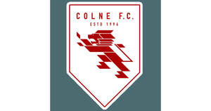

Trade Mark Journal No.2025/041 10 October 2025
UK00004264570 16 September 2025 (16,25,28,35,41)

- Class 16
- Printed Matter & Publications Printed matter; match programmes; posters; match tickets; brochures; flyers; books; magazines; newsletters; yearbooks; calendars; diaries; planners; stationery; writing pads; envelopes; pens; pencils; notebooks; stickers; decals; wall charts; instructional manuals; rule books; football coaching manuals; matchday team sheets; leaflets; postcards; photographs; lithographs; collectors’ cards; trading cards; autograph books; educational printed materials relating to football; promotional printed materials; catalogues; printed guides; maps; matchday inserts; ticket wallets; children’s activity books; training diaries.
- Class 25
- Clothing; sportswear; leisurewear; replica football shirts; replica sports jerseys; replica kits; football kits; training wear; warm-up clothing; tracksuits; hooded tops; sweatshirts; T-shirts; polo shirts; shorts; trousers; leggings; compression clothing; base layers; socks; football socks; sports socks; gloves; hats; scarves; beanies; caps; jackets; waterproof jackets; coats; anoraks; fleeces; bodywarmers; footwear; boots; football boots; trainers; sports shoes; sandals; slippers; headgear; headbands; wristbands; sports bibs; branded apparel; casual wear; children’s clothing; infant clothing; youth clothing; women’s clothing; men’s clothing; uniforms; staff uniforms; matchday clothing; rainwear; leisure footwear; fashion accessories in the form of clothing.
- Class 28
- Sporting Goods, Games & Toys Football equipment; footballs; mini footballs; training footballs; match balls; futsal balls; cones; bibs; training ladders; training hurdles; goals; goal nets; corner flags; shin guards; gloves for goalkeepers; protective padding; whistles; coaching boards; fitness training apparatus; resistance bands; skipping ropes; exercise mats; toys; football-themed toys; board games; card games; puzzles; action figures; collectable figurines; football souvenirs; mascots; plush toys; novelty items relating to football; hand-held electronic games; sports bags adapted for sporting articles; replicas of football trophies; commemorative sporting goods.
- Class 35
- Retail, Merchandising & Promotion Retail and wholesale services connected with the sale of clothing, footwear, headgear, sporting goods, printed matter, toys and souvenirs; provision of an online marketplace for buyers and sellers of football merchandise; sales promotion; marketing and advertising services for a football club; promotional services relating to football competitions and community football programmes; business sponsorship services; merchandising services for football matches and events; promotional campaigns for football club partners; fan engagement marketing; business management of sports clubs; operation of retail outlets at football stadiums; provision of retail kiosks at sports venues; advertising and promotional material distribution services; management of advertising space in match programmes and at football grounds.
- Class 41
- Organisation, administration and staging of football matches; organisation of sporting competitions and tournaments; organisation of community sporting events; provision of football training; coaching services; operation of football academies; educational services relating to sport; organisation of educational events and workshops; providing training facilities for sport; hire of sports facilities; community engagement programmes through sport; arranging and conducting recreational activities; cultural activities connected to football; production and presentation of live football matches; organising and hosting sporting open days; training in health, fitness and nutrition connected with football; mentoring programmes for young players; refereeing and officiating education; football camps; soccer schools; development programmes for youth football; arranging exhibitions relating to football; publication of educational materials connected with football training and development.
Colne Community Football Club